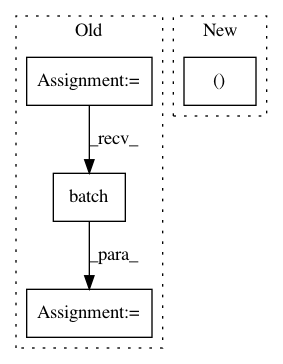

330626a775087bfda043dceb98522aedb447c703,seq2seq/python/pytorch/train.py,,show_examples,#Any#Any#Any#Any#Any#Any#Any#Any#Any#Any#,101
Before Change
// Mashed together from code using numpy only, hacked for th Tensors
def show_examples(use_gpu, model, es, rlut1, rlut2, embed2, mxlen, sample, prob_clip, max_examples):
batch = data.batch(es, 0, max_examples, long_tensor_alloc, tensor_shape, tensor_max)
GO = embed2.vocab["<GO>"]
EOS = embed2.vocab["<EOS>"]
src_array = batch["src"]
tgt_array = batch["tgt"]
if use_gpu:
src_array = src_array.cuda()
After Change
def show_examples(use_gpu, model, es, rlut1, rlut2, embed2, mxlen, sample, prob_clip, max_examples):
si = np.random.randint(0, len(es))
src_array, tgt_array, src_len, _ = es[si]
if max_examples > 0:
max_examples = min(max_examples, src_array.size(0))
In pattern: SUPERPATTERN
Frequency: 3
Non-data size: 4
Instances
Project Name: dpressel/mead-baseline
Commit Name: 330626a775087bfda043dceb98522aedb447c703
Time: 2017-06-27
Author: dpressel@gmail.com
File Name: seq2seq/python/pytorch/train.py
Class Name:
Method Name: show_examples
Project Name: jhfjhfj1/autokeras
Commit Name: 6d933f730fce9de7bedc3c7c94ee9227507ff626
Time: 2019-09-25
Author: jhfjhfj1@gmail.com
File Name: autokeras/auto_model.py
Class Name: AutoModel
Method Name: predict